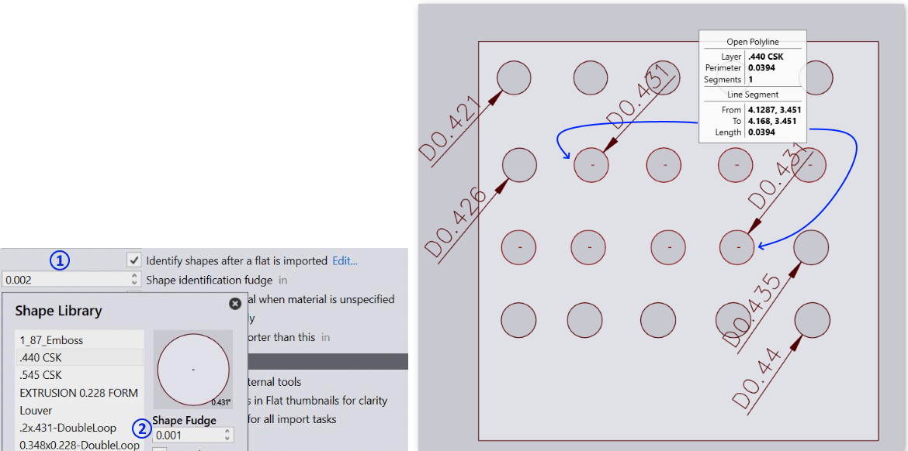

Fudge Shape Identification
The fudged shape identification is now supported. You can set the fudge value at:
- Global level by setting the Shape identification fudge on factory • settings • import page. This value is used as a default for all shapes.
- The default value set above can be overridden by setting the fudge value at individual shape level. Selecting the shape in the Shape Library dialog, displays the fudge value. By default this is set to 0, and default global value is used for such shapes.
The application default: 0.001mm (1 micron) fudge is used if both the values are set to 0. (Please note that for the curved shapes the fudge values are used for radius comparison than the diameter comparison.) Image
